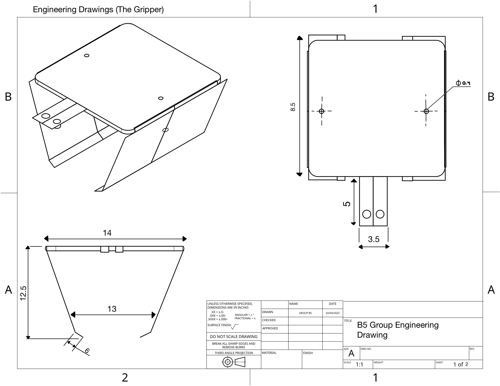
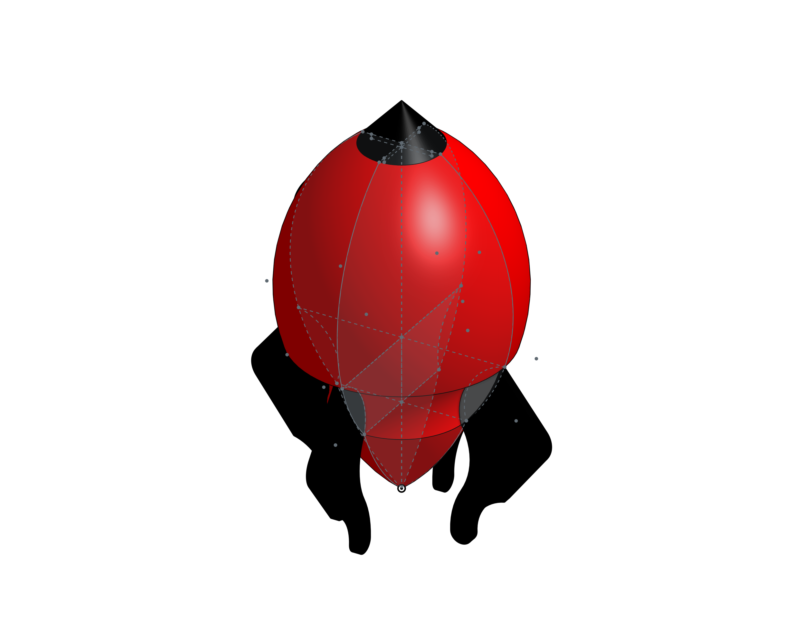
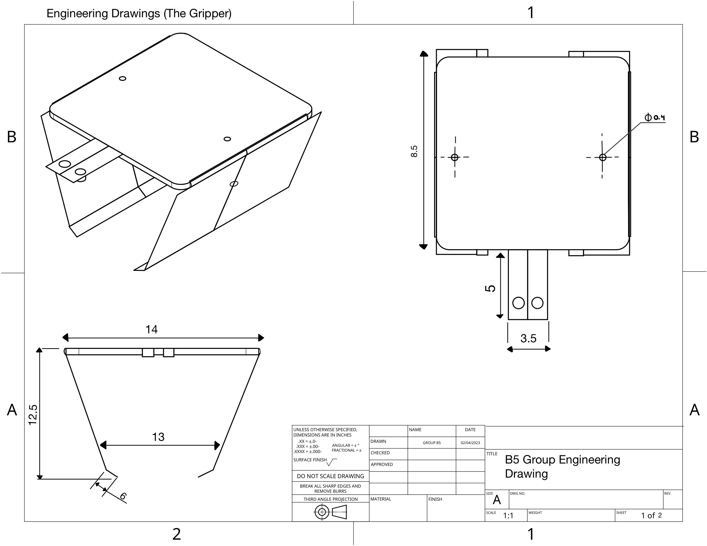
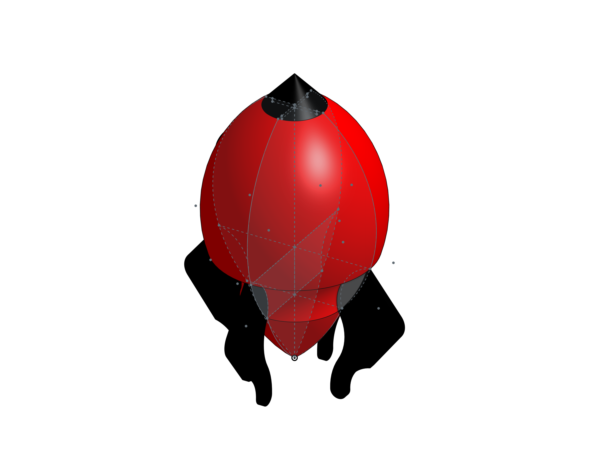
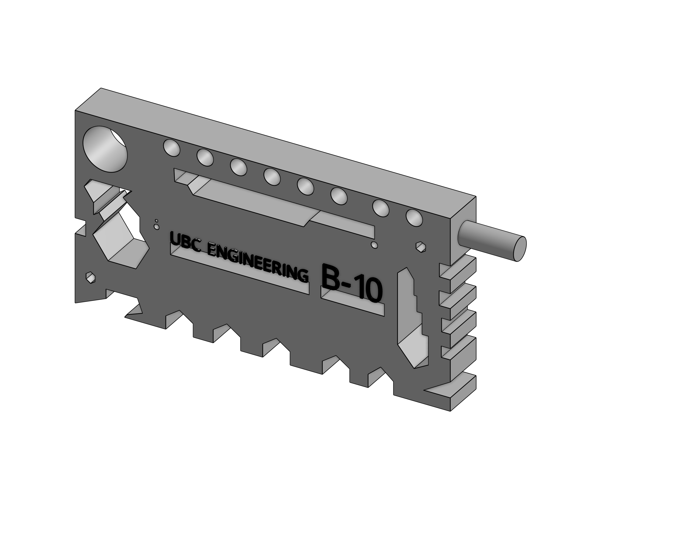

Design process
Sketches: As a team in APSC 101, we all came up with crazy sketches for the claw. Some of the sketches are on the left.
Working on initial design: We all made individual hinge systems, example "the one you see sometimes on the door". We were gonna make the plates move and capture the object.
Cutting plates: We learnt how to use aviations snips, nibblers, rivet gun, pillers, seamer, and hole puncher.
After doing this we had to choose from the many ideas, we used the APSC 101 Design process model to eliminate some ideas by screening, ranking and scoring. We also took risk management into account.
We also did some experimentation and protyping to assess the technical risk.
CAD Modelling and Engineering drawings
.png) 



Mechanical Part: After initial prototyping, we were on the stage of developing the solution, I did CAD modelling for the team.
Other CAD models: I am still learning how to use CAD, I'm exploring Fusion 360 as I feel it would be a better software since I have a high-end PC now.
What I wanna do this summer? Hopefully, I will get a 3D printer in the summers this year and look forward to 3D prints parts. I wanna obtain the skillset of 3D printing as it's very interesting. Here is my first 3D model. (one more on the left, made this just for practice).
